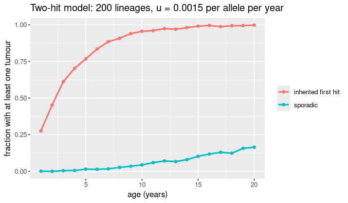
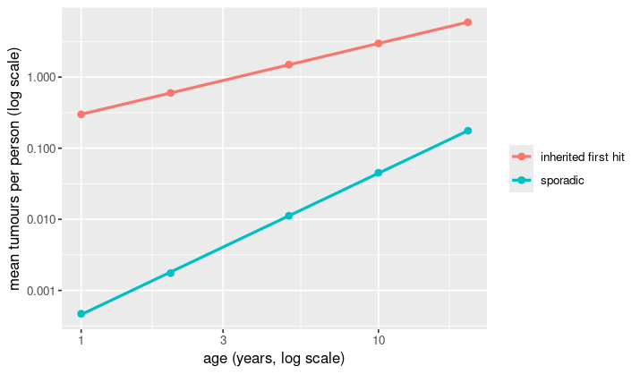
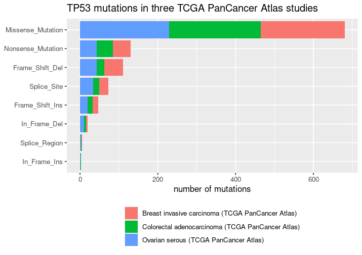

Exercise in R: cancer genetics
Goal
By the end of this exercise you should be able to:
- simulate the two-hit model with
rbinom, using one binomial draw per person; - build incidence curves over a range of ages with
map_dbl, and plot them; - use
lmon log-transformed data to recover the number of hits, as Knudson did; - summarise a real table of tumour mutations downloaded from cBioPortal.
Before you start
This page builds on the by-hand part of the Exercise, so do that first. You need the packages dplyr, purrr, readr and ggplot2. Download tp53_tcga_mutations.csv and save it in a data/ folder of your R project.
The file lists every TP53 mutation in three TCGA PanCancer Atlas studies on cBioPortal (ov_tcga_pan_can_atlas_2018, brca_tcga_pan_can_atlas_2018 and coadread_tcga_pan_can_atlas_2018), downloaded through the cBioPortal API in November 2026. The column n_sequenced gives the number of samples with mutation data in each study.
Tasks
No new idiom today: we reuse rbinom from the pedigrees unit and map_dbl from Extensions to Mendel. The trick is that rbinom(n_people, size = n_cells, prob = p) gives, in one call, the number of tumour lineages in each of n_people people, each with n_cells independent cell lineages. Use the same model as the demo: 200 lineages per child and a hit rate u = 0.0015 per allele per year.
library(dplyr)
library(purrr)
library(readr)
library(ggplot2)The two-hit model
R1. The probability that a given allele in one lineage has been hit by age t is 1 − (1 − u)t: one minus the chance of escaping every year. Write it as a function p_hit(age, u). Compute it for ages 1, 5 and 10. What is the chance that both alleles of one lineage have been hit by age 10?
u <- 0.0015 # hit rate per allele per year
n_cells <- 200 # cell lineages at risk per person
p_hit <- function(age, u) 1 - (1 - u)^age
p_hit(c(1, 5, 10), u)
p_hit(10, u)^2R2. Simulate 1000 carriers of an inherited first hit (each lineage needs one more hit) and 1000 non-carriers (each lineage needs two), at age 10. What fraction of each group has at least one tumour? How many tumours does an affected person have on average? Tabulate the number of tumours per person. Compare with the demo’s table.
set.seed(1)
n_people <- 1000
carrier <- rbinom(n_people, size = n_cells, prob = p_hit(10, u))
sporadic <- rbinom(n_people, size = n_cells, prob = p_hit(10, u)^2)
head(carrier, 10)
head(sporadic, 10)
mean(carrier > 0)
mean(sporadic > 0)
mean(carrier[carrier > 0])
mean(sporadic[sporadic > 0])
table(carrier)
table(sporadic)R3. Write a function frac_affected(age, hits_needed) that simulates 1000 people at a given age and returns the fraction with at least one tumour. Use map_dbl to compute it for ages 1 to 20 in both groups, collect the results in one tibble, and plot the two incidence curves.
frac_affected <- function(age, hits_needed, n_people = 1000) {
p_cell <- p_hit(age, u)^hits_needed
tumours <- rbinom(n_people, size = n_cells, prob = p_cell)
mean(tumours > 0)
}
set.seed(2)
ages <- 1:20
onset <- bind_rows(
tibble(age = ages, group = "inherited first hit",
frac = map_dbl(ages, \(a) frac_affected(a, hits_needed = 1))),
tibble(age = ages, group = "sporadic",
frac = map_dbl(ages, \(a) frac_affected(a, hits_needed = 2)))
)
onset |> filter(age %in% c(1, 2, 5, 10, 20))
ggplot(onset, aes(age, frac, colour = group)) +
geom_line(linewidth = 1) + geom_point() +
labs(x = "age (years)", y = "fraction with at least one tumour", colour = NULL,
title = "Two-hit model: 200 lineages, u = 0.0015 per allele per year")Counting hits from the shape of the curve
R4. If k hits are needed, the mean number of tumours per person grows as agek. Taking logs, log(tumours) = constant + k · log(age): a straight line whose slope is the number of hits. Simulate the mean number of tumours per person (100 000 people, so that the rare sporadic tumours are counted well) at ages 1, 2, 5, 10 and 20. Fit lm(log10(tumours) ~ log10(age)) to each group and read the slopes. Plot both on log–log axes.
mean_tumours <- function(age, hits_needed, n_people = 1e5) {
p_cell <- p_hit(age, u)^hits_needed
mean(rbinom(n_people, size = n_cells, prob = p_cell))
}
set.seed(3)
ages4 <- c(1, 2, 5, 10, 20)
counts <- bind_rows(
tibble(age = ages4, group = "inherited first hit",
tumours = map_dbl(ages4, \(a) mean_tumours(a, hits_needed = 1))),
tibble(age = ages4, group = "sporadic",
tumours = map_dbl(ages4, \(a) mean_tumours(a, hits_needed = 2)))
)
counts
coef(lm(log10(tumours) ~ log10(age), data = filter(counts, group == "inherited first hit")))
coef(lm(log10(tumours) ~ log10(age), data = filter(counts, group == "sporadic")))
ggplot(counts, aes(age, tumours, colour = group)) +
geom_point(size = 2) + geom_smooth(method = "lm", se = FALSE, formula = y ~ x) +
scale_x_log10() + scale_y_log10() +
labs(x = "age (years, log scale)", y = "mean tumours per person (log scale)", colour = NULL)R5. (Knudson’s test) Knudson (1971) did not count tumours. He plotted the log of the fraction of bilateral cases not yet diagnosed against age, and found a straight line, as expected for a single event at a constant rate. For the carriers from R3 (ages 1 to 10), compute still_free = 1 - frac and fit lm(log(still_free) ~ age). Compare the slope with −n·u. Why should they agree?
inherited <- onset |>
filter(group == "inherited first hit", age <= 10) |>
mutate(still_free = 1 - frac)
fit_k <- lm(log(still_free) ~ age, data = inherited)
coef(fit_k)
-n_cells * uR6. (two eyes) Split the 200 lineages into two eyes of 100 and simulate each eye with its own rbinom call at age 10. Among affected carriers, what fraction have tumours in both eyes? How many bilateral cases are there among 1000 non-carriers?
set.seed(4)
left <- rbinom(n_people, size = n_cells / 2, prob = p_hit(10, u))
right <- rbinom(n_people, size = n_cells / 2, prob = p_hit(10, u))
affected <- (left + right) > 0
mean(affected)
mean(left > 0 & right > 0) / mean(affected)
left_s <- rbinom(n_people, size = n_cells / 2, prob = p_hit(10, u)^2)
right_s <- rbinom(n_people, size = n_cells / 2, prob = p_hit(10, u)^2)
mean((left_s + right_s) > 0)
sum(left_s > 0 & right_s > 0)Real tumours: TP53 in cBioPortal
R7. Read data/tp53_tcga_mutations.csv. For each study, compute the fraction of sequenced samples that carry at least one TP53 mutation (use n_distinct on sample_id; one sample can have two mutations). Then count the mutation types and the five most frequent protein changes over all three studies. Make a bar chart of mutation types, coloured by study. Do these numbers match what you found in cBioPortal (F3 in the exercise)? Is the pattern typical of an oncogene or of a tumour suppressor?
tp53 <- read_csv("data/tp53_tcga_mutations.csv")
tp53 |>
group_by(study) |>
summarise(n_sequenced = first(n_sequenced),
n_mutated = n_distinct(sample_id),
frac_mutated = n_mutated / n_sequenced)
tp53 |> count(mutation_type, sort = TRUE)
tp53 |> count(protein_change, sort = TRUE) |> head(5)
tp53 |>
count(study, mutation_type) |>
ggplot(aes(x = n, y = reorder(mutation_type, n), fill = study)) +
geom_col() +
labs(x = "number of mutations", y = NULL, fill = NULL,
title = "TP53 mutations in three TCGA PanCancer Atlas studies") +
theme(legend.position = "bottom", legend.direction = "vertical")Solutions
Run with Rscript --vanilla from the unit folder. Messages from loading packages and reading the CSV are not shown.
R1.
[1] 0.001500000 0.007477534 0.014899154
[1] 0.0002219848By age 10 each allele has been hit with probability 0.0149, so both alleles of the same lineage with probability 0.0149² = 0.00022, about 67 times less.
R2.
[1] 2 2 3 5 2 5 6 4 3 1
[1] 0 0 0 0 0 0 0 0 0 0
[1] 0.957
[1] 0.046
[1] 3.143156
[1] 1
carrier
0 1 2 3 4 5 6 7 8 10 11
43 157 230 222 163 91 60 19 13 1 1
sporadic
0 1
954 4695.7% of carriers but only 4.6% of non-carriers have a tumour by age 10. Affected carriers have 3.1 tumours on average (up to 11); every affected non-carrier has exactly one. This matches the demo (94% and 4.9%, 3.05 and 1.02 tumours; the difference is chance). Expected values: carriers 1 − (1 − 0.0149)200 = 0.95, non-carriers 1 − (1 − 0.00022)200 = 0.043.
R3.
# A tibble: 10 × 3
age group frac
<int> <chr> <dbl>
1 1 inherited first hit 0.276
2 2 inherited first hit 0.453
3 5 inherited first hit 0.768
4 10 inherited first hit 0.956
5 20 inherited first hit 0.998
6 1 sporadic 0.001
7 2 sporadic 0
8 5 sporadic 0.015
9 10 sporadic 0.044
10 20 sporadic 0.165
The carrier curve rises from the start, almost linearly at first, and then saturates near 1. The sporadic curve stays near 0 for years and then bends upwards. At ages 1 and 2 there are only 0–1 sporadic cases among 1000 people, so those values are pure chance.
R4.
# A tibble: 10 × 3
age group tumours
<dbl> <chr> <dbl>
1 1 inherited first hit 0.299
2 2 inherited first hit 0.599
3 5 inherited first hit 1.50
4 10 inherited first hit 2.98
5 20 inherited first hit 5.90
6 1 sporadic 0.00047
7 2 sporadic 0.00175
8 5 sporadic 0.0112
9 10 sporadic 0.0452
10 20 sporadic 0.176
(Intercept) log10(age)
-0.5229854 0.9962263
(Intercept) log10(age)
-3.339118 1.987324
The slopes are 1.00 for carriers and 1.99 for non-carriers: one and two hits. Doubling the age doubles the carriers’ tumours (0.30 → 0.60) but quadruples the non-carriers’ (0.00047 → 0.00175, close to 4×; the small numbers are noisy). We use the mean number of tumours rather than the fraction affected, because the fraction saturates at 1 and would bend the carrier line (fitting the fraction at ages 1–5 gives a slope of only about 0.7).
R5.
(Intercept) age
0.0177288 -0.3093728
[1] -0.3The slope is −0.31, close to −n u = −0.30. A carrier is still tumour-free at age t only if none of the 200 lineages has had its single remaining hit: (1 − u)n t ≈ e−n u t. Its log, −n u t, is a straight line in t with slope −n u. A straight line on this plot is the signature of one event happening at a constant rate; that is what Knudson saw for bilateral (hereditary) retinoblastoma.
R6.
[1] 0.936
[1] 0.6399573
[1] 0.043
[1] 064% of affected carriers have tumours in both eyes, close to the demo’s 63%. Among the 43 affected non-carriers, none is bilateral: two independent two-hit events in the same child would have a probability of about 0.02² = 0.0005. This is why bilateral retinoblastoma is a strong sign of a germline RB1 mutation, even without a family history.
R7.
# A tibble: 3 × 4
study n_sequenced n_mutated frac_mutated
<chr> <dbl> <int> <dbl>
1 Breast invasive carcinoma (TCGA PanCancer … 1066 347 0.326
2 Colorectal adenocarcinoma (TCGA PanCancer … 534 314 0.588
3 Ovarian serous (TCGA PanCancer Atlas) 523 373 0.713
# A tibble: 8 × 2
mutation_type n
<chr> <int>
1 Missense_Mutation 680
2 Nonsense_Mutation 130
3 Frame_Shift_Del 110
4 Splice_Site 73
5 Frame_Shift_Ins 47
6 In_Frame_Del 20
7 Splice_Region 5
8 In_Frame_Ins 2
# A tibble: 5 × 2
protein_change n
<chr> <int>
1 R175H 68
2 R273H 39
3 R248Q 32
4 R248W 29
5 R282W 28
TP53 is mutated in 71% of ovarian serous, 59% of colorectal and 33% of breast cancers in these studies, as in cBioPortal. 680 of the 1067 mutations (64%) are missense, with recurrent hotspots at arginines 175, 248, 273 and 282 in the DNA-binding domain. The other third are truncating (nonsense, frameshift, splice site), spread along the gene: the loss-of-function pattern of a tumour suppressor. The missense hotspots are the twist: these mutant proteins also block the remaining normal p53, so they are selected more strongly than a simple null allele.
Where this leads
rbinom with a large size counts rare events in many independent units: cells here, gene copies in the next units. In Drift, selection the same function draws the next generation of a whole population, inside a loop.